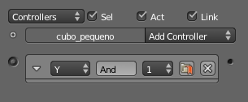

Material didáctico: Galileo en Pisa
En este material didáctico recordamos algunas de las posibilidades de mapeado y aprovechamos para aprender:
- A insertar una imagen y mapearla de modo automático sobre un plano.
- Usar un poco los bloques lógicos para aumentar la interacción con la simulación.
Y todo para ver a Galileo Galilei en lo alto de la Torre de Pisa poniendo en práctica su famoso experimento sobre la velocidad en la caída de los cuerpos.
Nos descargamos estas imágenes. Son PNGs con fondo transparente.

Eliminamos el cubo de la escena por defecto y, de momento, no añadimos nada. Nos dirigimos a Archivo/Preferencias de usuario y activamos la extensión Import-Export: Import Images as Planes.
De regreso al entorno Default nos dirigimos al menú Archivo/Importar/images as Planes para poner en marcha esta formidable extensión.
Dada la orden, toda la interfaz se convierte en un explorador de archivos con una columna de opciones a la izquierda. Antes de ir a por la imagen escogemos las opciones deseadas:

- Sin sombra. Importante. Al tener canal alfa, si se producen brillos en el plano se hace evidente el plano que contiene la imagen.
- Use alpha. Lógico ya que nuestra imagen tiene transparencia.
- Premultiplicar. Suaviza los bordes de las formas sobre las transparencias.
- Use image dimensions. Lee la información de la imagen y toma sus medidas.
Ya estamos en condiciones de ir a buscar la imagen de la Torre de Pisa. Este es el resultado en sombreado Textura.
La extensión Import Images as Planes tiene importantes ventajas entre los que destaca que deja el material preparado tanto para la modalidad de trabajo Blender Estandar como para Blender Game.
Giramos este plano 90º en X ("RX90") y sacamos un plano (Añadir/Malla/Plano) para que haga de suelo.
Ahora que sabemos usar la extensión Import Images as Planes repetimos el proceso para la imagen de Galileo. Situamos el plano algo más atrás del de la torre.
Como ya vamos a diseñar las físicas nos pasamos a la modalidad de trabajo Blender Game.
Sacamos un cubo (Añadir/Malla/Cubo, lo escalamos ("S"), rotamos ("R") y colocamos delante de la imagen de Galileo para conseguir un engaño visual como este.
En el panel Físicas  lo convertimos en Cuerpo rígido y le asignamos un Limite de colisión: Caja.
lo convertimos en Cuerpo rígido y le asignamos un Limite de colisión: Caja.

En el panel Mundo  :
:
- Descendemos CPS a 24 por si queremos luego la animación.
- Para no aumentar los objetos hacemos un poco de trampa y bajamos Gravedad a 0.50. Para nuestro ejemplo es una trampa más que aceptable y así el objeto tarda un tiempo razonable en recorrer toda la torre.
- Aumentamos Sub-pasos en el caso de que se originen problemas como que el cubo atraviese el suelo.
Tipo de física para la torre y Galileo
La mejor manera de evitar problemas con colisiones no deseadas es que tanto el plano con la torre como el de Galileo sean cuerpos No colisiona.
Iniciación a los bloques lógicos
No es la intención en Blender: 3D en la Educación aprender el uso de los bloques lógicos pero no vamos a dejar pasar la ocasión de hacer un pequeñísimo ejercicio.
Lo que conseguimos es que la simulación no comience al ejecutar el juego sino mediante una orden nuestra a través de teclado.
Nos pasamos del entorno de trabajo Default al Game Logic. Abajo se encuentra el Editor de lógica . Si en el editor Vista 3D seleccionamos el cubo (al que hemos llamado cubo_pequeno) esto es lo que aparece en el Editor de lógica .
Tal y como hemos dicho, no entramos en detalle. Vamos directos a trabajar:
- Pulsamos sobre Add Sensor y escogemos uno de tipo Siempre.
- Al lado desplegamos Add controller y escogemos uno de tipo Y.

- A la derecha pulsamos en Add Actuator y escogemos uno de tipo Editar objeto. Una vez dentro seleccionamos nuestro objeto en cuestión (cubo_pequeno). Sólo en ese momento pulsamos en Añadir objeto y seleccionamos Dinámicas; en el nuevo cuadro configuramos Operación dinámica: Suspender dinámicas.
Ahora hay que relacionar los tres elementos para crear un bloque lógico que funcione. Sólo hay que unir con el ratón los pequeños círculos.
Si todo ha ido bien, al poner en marcha la simulación ("P") el cubo no caerá.
Necesitamos un segundo bloque lógico con:
- Sensor de tipo Teclado. En el cuadro que se despliega, en el campo Key hacemos clic y una vez dentro pulsamos la tecla con la que queremos poner en marcha las dinámicas (nosotros optamos por "Intro" que Blender llama Return).
- Controller es igual que antes, de tipo Y. Creamos uno nuevo, no aprovechamos el anterior.
- Actuator también es igual solo que al final del proceso escogemos Reestablecer dinámicas.
Unimos los tres elementos para que funcione el bloque lógico. Al activar la simulación ("P") el cubo sigue sin moverse, pero al pulsar la tecla "Intro" comienza la acción.
Hemos terminado, regresamos al entorno Default.
Al duplicar ("Shift_D") el cubo todos los datos de los bloques lógicos se heredan.
Una composición en esta línea es lo que buscamos.
Galileo está listo para comprobar si su teoría es cierta.
Nuestro resultado final con algun mapeado más para el fondo...